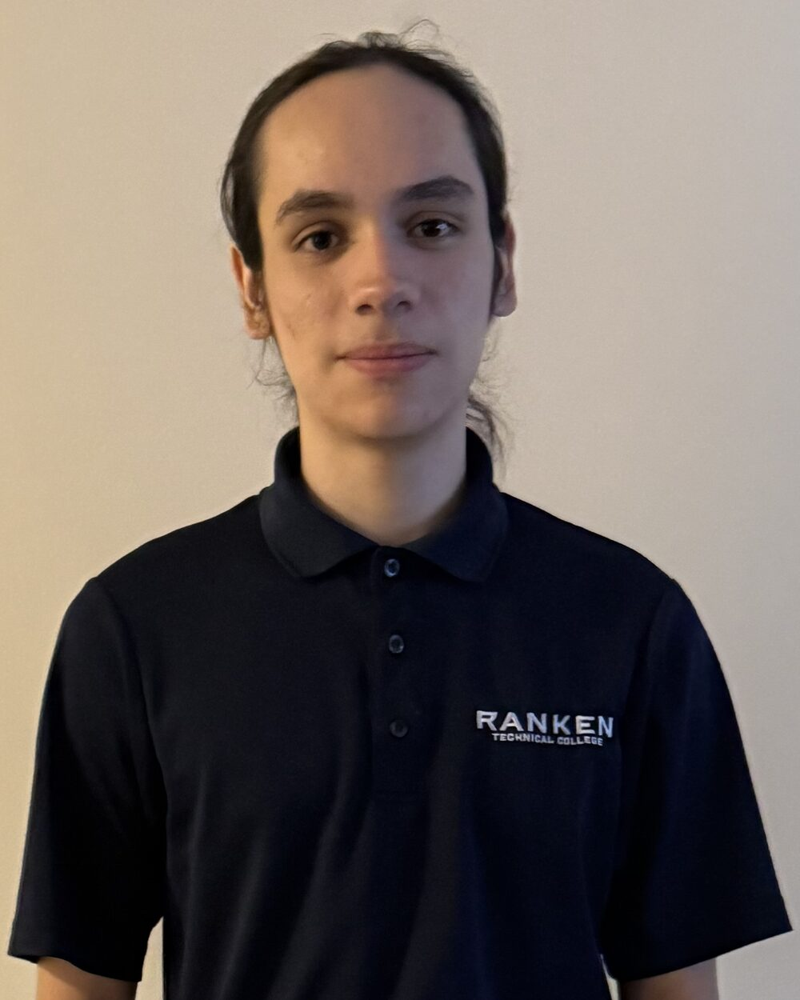

Ranken Technical College2024 – 2026
Application & Web Development (AWD)
- Coursework in HTML & CSS, JavaScript, C# and React/Node.js.
- Capstone work: full-stack web apps and database-driven desktop tools.
josh@josh-a.dev : ~ $ whoami
Aspiring developer building type-safe software and tooling.

I'm an aspiring developer who works hard almost 24/7. I love learning about everything and how it works down to the 1's and 0's, and I constantly look for different, more efficient ways to get things done.
I'm very interested in type-safe languages such as Rust, Go and TypeScript, and I plan to master them soon. My interest in AI keeps growing as I find better workflows — planning prompts, running multiple agents with specialized skills, and using forks to snapshot context.
I'm currently at Ranken Technical College, building an API issue tracker with TypeScript. I graduate this year and want to grow with a company to ship a product that is manageable, safe and genuinely beneficial. I'm also into CLI and TUI tools to get the most out of a terminal.
I love open source and will choose it any day over proprietary code that can't be audited — I believe that should be the standard everywhere.
A TypeScript/MERN API for tracking problems inside a codebase, so teams stop shipping regressions they can't see. Create, assign, triage and close issues with the data that actually matters.
People build big projects, ship quickly, and something breaks. This tracker manages those issues with CRUD operations and structured fields — status (open/closed), priority (low/medium/high), steps to reproduce, assignees, creation dates and time spent.
Creator and maintainer of the API. I complete issues on the tracker, assign them to people, and log my hours against them.
A MERN-stack application exposing a REST API, with an interface people can communicate through.
Code formatting and the structure of the endpoint routes, controllers and data layer. Still in progress — always iterating toward cleaner, safer boundaries.
Enter any city and get real-time weather data from OpenWeatherMap.
My final project for AWD1000 — a fully functional web app to catalog and manage your video game collection.
A CRUD application with a relational database to manage NES game collections, view manuals, and play the games.
Developer · Application & Web Development
contact@josh-a.dev
josh-a.dev · github.com/Joshua-Arellano
Aspiring developer who works hard almost 24/7 and loves learning how everything works down to the 1's and 0's. Focused on type-safe languages, terminal tooling and open-source software. Currently building a TypeScript API issue tracker and finishing an Application & Web Development degree at Ranken Technical College.
Application & Web Development (AWD)
High School Diploma
Summer job, two seasons
MERN-stack API for tracking issues in a codebase: CRUD, status, priority, reproduction steps, assignees and time logging.
Responsive app that fetches real-time weather for any city.
Catalog and manage a video game collection in the browser.
CRUD desktop app to manage NES collections and launch games.
Technical
Professional
Interests: soldering · homelab · drawing · CLI & TUI tools · open source.
How the API issue tracker came together — modelling issues, routes, and the bits I'd redo.
What runs in my homelab, how it's wired up, and what I keep breaking along the way.
Notes from moving into Rust, Go and TypeScript, and what type safety changes about design.
Why the terminal is the fastest interface, and how I build tools that live in it.
Graduating next year and looking for a team where I can grow, ship, and make a truly amazing product.